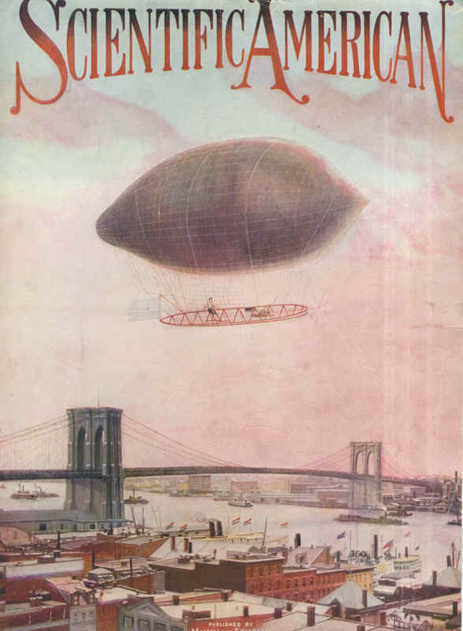

Couverture de Scientific American cette année-là

Janvier ou février Une boule lumineuse est aperçue dans l'Est de la France. Il fut signalé aussi en Angleterre
(éclairant le sol avec un puissant projecteur) "Mystic Phenomena Of Welsh Revival", Constitution de Atlanta, 12 mars 1905,
dans l'est de l’Europe et en Russie où on tira même dessus au fusil.
A Cherbourg (France), on
aperçoit, venant du large et à une altitude qui ne peut être — même approximativement — déterminée, une
énorme boule lumineuse qui, après avoir décrit une courbe au dessus de la ville.
la boule disparaît dans la direction d’où elle était venue. Le vice-amiral-préfet
maritime fait fonctionner les projecteurs électriques de la digue, mais leurs rayons ne sont pas
suffisamment puissants et la tentative ne donna aucun résultat. Certaines personnes, dont des officiers de
marine, affirment avoir vu la lumière de ce météore prendre des teintes
rouges et vertes. A l’observatoire de l’arsenal on se perd en conjectures et, à tout hasard, le
vice-amiral Besson a donné des ordres pour que les torpilleurs se tiennent, la nuit prochaine et les
suivantes, prêts à appareiller si ce visiteur mystérieux reparaît, et à le suivre dans ses évolutions pour
essayer d’en pénétrer le mystère. Dans un dessin qui l’occupe entièrement, la couverture du n°
1985 d’un autre périodique - Le Bon Journal du 16 avril - montre une foule nombreuse réunie
sur les quais. On voit distinctement la Lune en croissant mais aussi une sphère nettement plus importante
car sans doute toute proche, qu’un projecteur essaie vainement d’atteindre. L’objet y est
décrit comme «une énorme Lune dont les couleurs sont changeantes. Le Matin,
3 avril 1905. Toutes les autorités du port tienent conseil et, durant 3 nuits, montent le quart
sur la place Napoléon. De leurs observations, il résultequ’il faut renoncer à l’hypothèse d’un
ballon ou de signaux en mer, et qu’il s'agissait incontestablement d’un phénomène cosmique auquel
demeurait étrangère toute participation humaine Le Matin, 9 Avril 1905.
Nombre de journaux et publications signalent l’événement, y compris le Bulletin de la Société des
Astronomes Français, qui considère que ce gros objet lumineux n’était autre que la planète Venus.
Eté
Le docteur I. P. de Craovia voit à Horodnicul de Sus (Roumanie) près de Radauti un objet
alongé en forme de soucoupe, plus gros que la Lune. Il émet puissamment sa propre lumière et vole
horizontalement vers l'Ouest.
Depuis le village de Walhonding (à 10 miles au nord de
Sandursky, Ohio) un joailler local et 2 compagnons voient un aéronef au sud-est affichant 3 lumières rouges
à l'arrière et 1 verte à la proue "Here's An Old Friend", Star Journal de Sandusky (Ohio), 2 août 1905.
J. A. Jackson, respectable citoyen de
Silshee (Californie), se rend dans ses "commodités extérieures" lorsqu'il voit une lumière très
brillante dans le ciel. Elle semble être rattachée à un "vaisseau aérien" de 20 m doté d'ailes. La
mystérieuse machine paraissait mue par ses seules ailes, elle montait et descendait au rythme des
battements d'ailes comme un oiseau
gigantesqueBrawley
News, 4 août 1905. D'autres habitants de la région assurent avoir vu la même chose.
Près de Lethbridge (Alberta), des gens partent en expédition pour tenter de déterminer
l'origine de la lumière fantômatique "A Mysterious Light", Herald de Lethbridge (Alberta), 15 novembre 1905.
Un bolide de diamètre lunaire est visible durant 2 h BSAF,
1906.
Différents témoins voient pendant 10 mn
une croix rouge profond à travers un banc de nuages "Red Cross In The Sky", Evening Times de Cumberland (Maryland), 29 décembre 1905.
A Portland (Oregon), un objet "étrange"
descend des hauts nuages et vient survoler la ville UFO
Roundup 4-36.